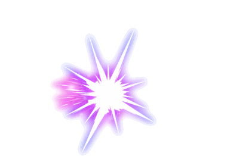

<!DOCTYPE html>
<html>

<head>
    <meta charset="UTF-8">
    <title>打飞机--飞机大战</title>
    <style type="text/css">
        * {
            padding: 0;
            margin: 0;
            list-style: none;
        }
        /*设置背景移动的动画*/
        
        @keyframes bgMove {
            from {
                /*开始位置*/
                background-position: 0px 0px;
            }
            to {
                /*结束位置*/
                background-position: 0px 768px;
            }
        }
        
        #show {
            width: 512px;
            height: 768px;
            border: 1px solid red;
            margin: 0 auto;
            position: relative;
            background: url(images/bg.jpg) 0px 0px;
            /*播放动画*/
            animation: bgMove 10s linear infinite;
            overflow: hidden;
        }
        
        #me {
            width: 106px;
            height: 76px;
            position: absolute;
            top: 500px;
            left: 200px;
        }
        
        .di {
            position: absolute;
        }
        
        .dan {
            width: 10px;
            height: 35px;
            position: absolute;
        }
        /*.dan>img{
				width: 100px;
				height: 100px;
			}*/
        
        .boom {
            width: 110px;
            position: absolute;
        }
        
        .boom>img {
            width: 110px;
        }
        
        .over {
            width: 512px;
            height: 768px;
            line-height: 768px;
            text-align: center;
            font-size: 50px;
            color: red;
            background: black;
            opacity: 0.5;
            position: absolute;
            top: 0;
            left: 0;
            z-index: 99;
        }
        
        .fen {
            width: 200px;
            height: 70px;
            line-height: 70px;
            text-align: center;
            border: 3px solid yellow;
            position: relative;
            top: 0;
            left: 312px;
            text-align: center;
            color: yellow;
            font-size: 30px;
            letter-spacing: 10px;
        }
        
        .fen>li {
            width: 22px;
            height: 30px;
            background: red;
            margin-left: 22px;
            margin-top: 20px;
            background: url(images/num.png) 0px 0px;
            float: left;
        }
        
        .fen>li:first-child {
            margin-left: 0;
        }
    </style>
</head>

<body>
    <div id="show">
        <!--设置我方飞机-->
        <div id="me">
            
        </div>
        <!--<div class="over">
				<i>Game Over</i>
			</div>-->
        <ul class="fen">
            <li></li>
            <li></li>
            <li></li>
            <li></li>
            <li></li>
        </ul>
    </div>
    <!--爆炸特效-->
    <!-- <div class="bao">
        
    </div> -->

</body>
<script type="text/javascript">
    var me = document.getElementById('me');
    var fen = document.getElementsByClassName('fen')[0];

    /**
     * 游戏需求
     * 1.背景移动
     * 2.我方飞机--移动--发射子弹
     * 3.地方飞机--移动--发射子弹
     * 4.击中飞机--得分
     * 5.我方飞机被击中--死亡掉血
     */
    //		设置随机函数
    function rand(min, max) {
        var num1 = Math.ceil(Math.random() * (max - min + 1) + min - 1);
        return num1;
    }
    /**
     * 第一步，显示背景与主角飞机 上下左右  键盘移动事件
     */
    var runX;
    var runY;
    var mytime;
    var fennum = -22;
    var shi = 0;
    var bai = 0;
    var qian = 0;
    var wan = 0;
    window.onkeydown = function(k) {
        var k = k || window.event;
        //左37 上38 右39 下40
        switch (k.keyCode) {
            case 37:
                //调用改变x轴的函数moveX()
                moveX(-4);
                break;
            case 38:
                moveY(-4);
                break;
            case 39:
                moveX(4);
                break;
            case 40:
                moveY(4);
                break;
            case 32:
                makeDan();
                break;
        }
    }
    window.onkeyup = function(k) {
            var k = k || window.event;
            switch (k.keyCode) {
                case 37:
                    //当左右键被抬起时，去掉定时器
                    clearInterval(runX);
                    runX = null;
                    break;
                case 38:
                    clearInterval(runY);
                    runY = null;
                    break;
                case 39:
                    clearInterval(runX);
                    runX = null;
                    break;
                case 40:
                    clearInterval(runY);
                    runY = null;
                    break;
                case 32:
                    break;
            }
        }
        //设计x轴改变函数
    function moveX(b) {
        if (runX) {
            return;
        }
        //设置定时器去圆润移动
        runX = setInterval(function() {
            var meleft = me.offsetLeft + b;
            if (meleft > show.offsetWidth - me.offsetWidth) {
                meleft = show.offsetWidth - me.offsetWidth;
            }
            if (meleft < 0) {
                meleft = 0;
            }
            me.style.left = meleft + 'px';
        }, 10)

    }

    function moveY(b) {
        if (runY) {
            return;
        }
        runY = setInterval(function() {
            var metop = me.offsetTop + b;
            if (metop > show.offsetHeight - me.offsetHeight) {
                metop = show.offsetHeight - me.offsetHeight;
            }
            if (metop < 0) {
                metop = 0;
            }
            me.style.top = metop + 'px';
        }, 10)
    }
    //制造子弹函数
    function makeDan() {
        //创建div元素节点
        var div = document.createElement('div');
        div.className = 'dan'; //给创建的div加类名
        div.innerHTML = "";
        //确定插入的位置 x y 轴

        var danx = me.offsetLeft + (me.offsetWidth / 2);
        //			console.log(danx);
        var dany = me.offsetTop - 35;
        //			console.log(dany);
        var divs = document.querySelectorAll('.dan');
        if (divs.length < 3) {
            show.appendChild(div);
        }
        div.style.left = danx + 'px';
        div.style.top = dany + 'px';
    }
    //设置子弹移动与敌方飞机移动的步数
    var dMove = 20;
    var dfMove = 5;
    //		设置定时器,用于移动子弹
    var moveDan = setInterval(function() {

            //获取所有的子弹元素
            var dans = document.querySelectorAll('.dan');
            var diflys = document.querySelectorAll('.di');
            if (diflys.length != 0) {
                //遍历飞机让其移动
                for (var i = 0; i < diflys.length; i++) {
                    var flyY = diflys[i].offsetTop + dfMove;
                    if (flyY > show.offsetHeight + 82) {
                        show.removeChild(diflys[i]);
                        continue;
                    }
                    var startx = diflys[i].offsetLeft
                    var overx = startx + diflys[i].offsetWidth;
                    var starty = diflys[i].offsetTop;
                    var overy = starty + diflys[i].offsetHeight;
                    if (((me.offsetLeft + me.offsetWidth / 2) >= startx && me.offsetLeft <= overx) && (me.offsetTop >= starty && me.offsetTop <= overy)) {
                        var gameover = document.createElement('div');
                        gameover.className = 'over';
                        gameover.innerHTML = '<i>Game Over</i>';
                        show.appendChild(gameover);
                        makeBoom(startx, starty);
                        show.removeChild(diflys[i]);
                        show.removeChild(me);

                    }
                    diflys[i].style.top = flyY + 'px';
                }
            }
            /**
             * 判断子弹击中敌人飞机
             * 子弹的x坐标点在飞机的x开始位置 与 结束位置之间
             * 同时子弹的y坐标点 在飞机的y开始的位置 与 结束位置之间
             * 说明击中了飞机
             * 
             */


            if (dans.length > 0) {
                //遍历子弹让其移动
                for (var i = 0; i < dans.length; i++) {
                    var yd = dans[i].offsetTop - dMove;
                    var zix = dans[i].offsetLeft;
                    //小于-35时说明子弹完全走出屏幕
                    if (yd < -35) {
                        //删除子弹
                        show.removeChild(dans[i]);
                        //跳过本次循环
                        continue;
                    }
                    /*把子弹位置一一比较敌人飞机位置*/
                    for (var j = 0; j < diflys.length; j++) {
                        //获取敌人飞机开始与结束的x坐标
                        var startx = diflys[j].offsetLeft
                        var overx = startx + diflys[j].offsetWidth;
                        //获取敌人飞机开始与结束的y坐标
                        var starty = diflys[j].offsetTop;
                        var overy = starty + diflys[j].offsetHeight;
                        //判断子弹是否击中
                        if ((zix >= startx && zix <= overx) && (yd >= starty && yd <= overy)) {

                            //删除相应的子弹与飞机
                            show.removeChild(dans[i]);
                            show.removeChild(diflys[j]);
                            //如果击中调用击中函数
                            makeBoom(startx, starty);
                            //							var fenlis = document.querySelectorAll('.fen li');
                            console.log(shi);
                            shi += fennum;

                            fen.lastElementChild.previousElementSibling.style.background = 'url(images/num.png) ' + shi + 'px 0px';

                            if (shi < -198) {
                                shi = 0;
                                bai += fennum;
                                fen.lastElementChild.previousElementSibling.style.background = 'url(images/num.png) ' + shi + 'px 0px';
                                fen.lastElementChild.previousElementSibling.previousElementSibling.style.background = 'url(images/num.png) ' + bai + 'px 0px';
                                console.log(bai);
                                if (bai < -198) {
                                    bai = 0;
                                    qian += fennum;
                                    fen.lastElementChild.previousElementSibling.previousElementSibling.style.background = 'url(images/num.png) ' + bai + 'px 0px';
                                    fen.firstElementChild.nextElementSibling.style.background = 'url(images/num.png) ' + qian + 'px 0px';
                                    if (qian < -198) {
                                        qian = 0;
                                        wan += fennum;
                                        fen.firstElementChild.nextElementSibling.style.background = 'url(images/num.png) ' + qian + 'px 0px';
                                        fen.firstElementChild.style.background = 'url(images/num.png) ' + wan + 'px 0px';

                                    }
                                }
                            }
                        }

                    }
                    dans[i].style.top = yd + 'px';
                }
            }
        }, 100)
        /*生成敌方飞机*/
    function makeDiRen() {
        //创建元素节点
        var di = document.createElement('div');
        di.className = 'di';
        var img = rand(1, 3);
        di.innerHTML = "";
        show.appendChild(di);
        di.style.left = rand(3, show.offsetWidth - 120) + 'px';
    }
    setInterval(makeDiRen, 300);
    //设置击中函数
    function makeBoom(x, y) {
        var boom = document.createElement('div');
        boom.className = 'boom';
        boom.innerHTML = "";
        show.appendChild(boom);
        boom.style.left = x + 'px';
        boom.style.top = y + 'px';
        //设置一次定时器，删除特效div
        setTimeout(function() {
            show.removeChild(boom);
        }, 300);
    }
</script>

</html>